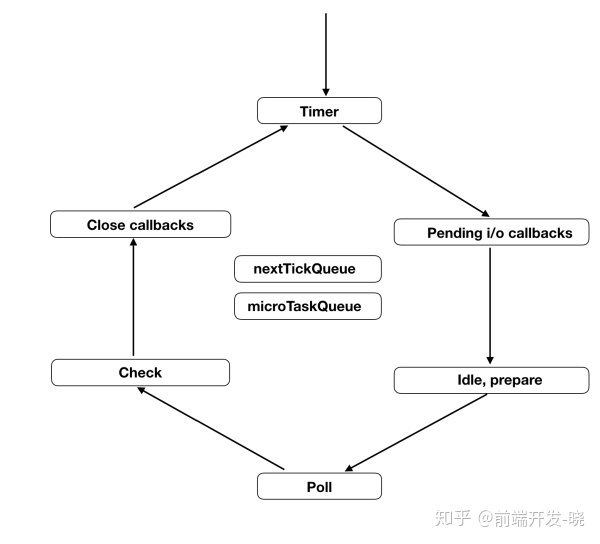
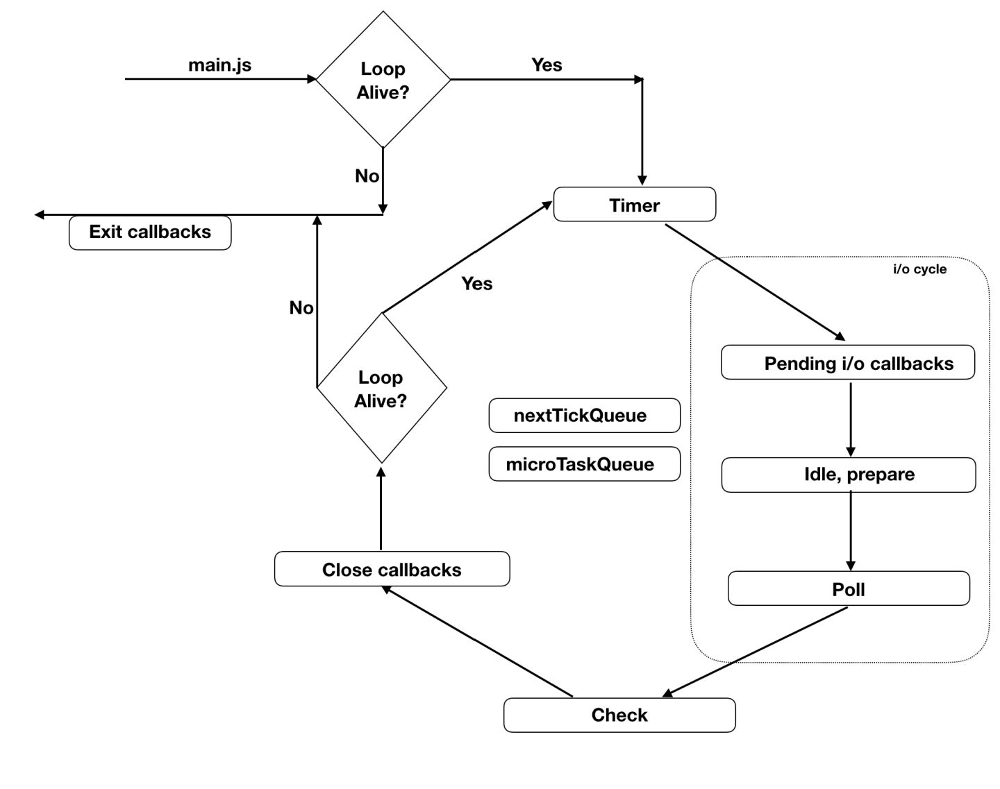

Nodejs运行机制
事件驱动

事件循环

循环阶段

定时器（Timer）阶段
这个是事件循环开始的阶段，绑定到这个阶段的队列，保留着定时器（setTimeout, setInterval）的回调。尽管它并没有将回调推入队列中，但是用最小堆来存储计时器并且在到达规定的时间后执行回调。
即将发生的（Pending） i/o 回调阶段
这个阶段执行在事件循环中 pending_queue 里的回调。这些回调是被之前的操作推入的。例如当你尝试往 tcp 中写入一些东西，这个工作完成了，然后回调被推入到队列中。错误处理的回调也在这里。
Idle, Prepare 阶段
尽管名字是空闲（idle）,但是每个循环（tick）都运行。Prepare 也在轮询阶段开始之前运行。不管怎样，这两个阶段是 node 主要做一些内部操作的阶段；因此，我们不在这儿讨论。
轮询（Poll）阶段
可能整个事件循环最重要的一个阶段就是 poll phase。这个阶段接受新传入的连接（新的 Socket 建立等）和数据（文件读取等）。我们可以将轮询阶段分成几个不同的部分。
- 如果
watch_queue（这个队列被绑定到轮询阶段）不为空，它们将会被一个接着一个的执行直到队列为空或者系统到达最大的限制。 - 一旦队列为空，node 就会等待新的连接。等待或者睡眠的时间取决于多种因素，待会儿我们会讨论。
检查（Check）阶段
轮询的下一个阶段是 check phase，这个专用于 setImmediate 的阶段。为什么需要一个专门的队列来处理 setImmediate 回调。这是因为轮询阶段的行为，待会儿将在流程部分讨论。现在只需要记住检查（check）阶段主要用于处理 setImmediate() 的回调。
关闭（Close）回调
回调的关闭(socket.on(‘close’, ()=>{})) 都在这里处理的，更像一个清理阶段
nextTickQueue & microTaskQueue
nextTickQueue 中的存储着被 process.nextTick() 触发的回调。microTaskQueue 保留着被 Promise 触发的回调。它们都不是事件循环的一部分（不是在 libUV 中开发的），而是在 node.js 中。在 C/C++ 和 Javascript 有交叉的时候，它们都是尽可能快地被调用。因此它们应该在当前操作运行后（不一定是当前 js 回调执行完）。
事件循环的工作流程
当在你的控制台运行 node my-script.js，node 设置事件循环然后运行你主要的模块（my-script.js） 事件循环的外部。一旦主要模块执行完，node 将会检查循环是否还活着（事件循环中是否还有事情要做）？如果没有，将会在执行退出回调后退出。process.on('exit', foo) 回调（退出回调）。但是如果循环还活着，node 将会从计时器阶段进入循环。
